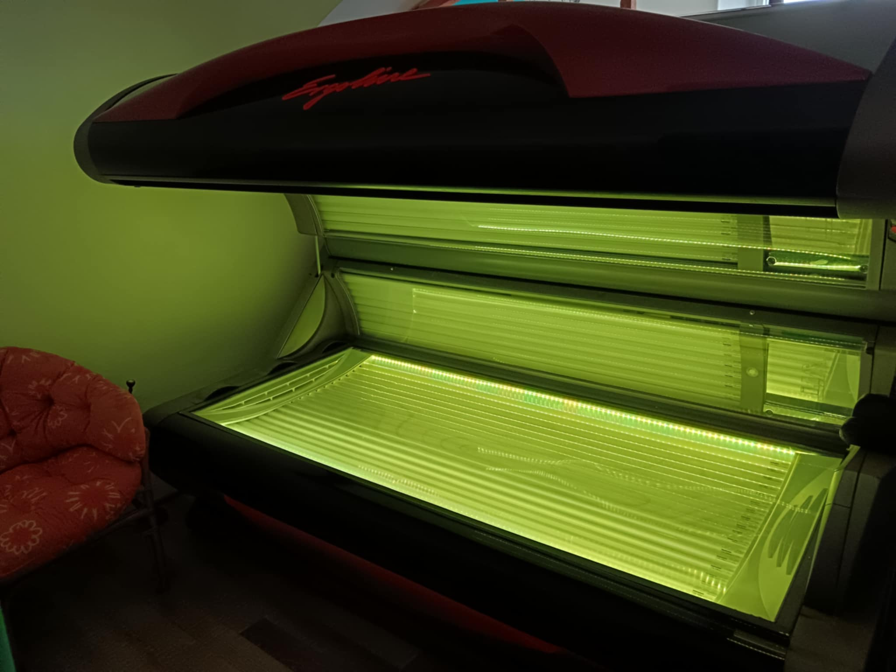

Doporučení před první návštěvou solária

- opalování v soláriu se skládá z více opalování, ne vícekrát než dvakrát v týdnu
- V jeden den se neopalujte v soláriu i na slunci
- Bezprostředně před a po opalování v soláriu se nesprchujte (1 – 2 hodiny)
- Opalování v soláriu se z důvodu dalšího zatížení organismu nedoporučuje nemocným ani těhotným ženám
- Některé léky mohou ojediněle způsobit přecitlivělost na UV záření. Možné problémy konzultujte se svým lékařem
- Před a po opalování je dobré používat speciální solární kosmetiku. Vhodné je rovněž užívání beta karotenu
- I zde platí „všeho s mírou"!
Jak musím připravit kůži před návštěvou?
Pro zajištění co nejlepších výsledků je třeba před návštěvou odstranit všechen make-up a důkladně očistit pokožku.
Žádná jiná příprava není potřeba.